The Last of Us Part I
Joel and Ellie's journey across a post-apocalyptic America — rebuilt for the modern era.
Review
The Last of Us is one of the most acclaimed narratives in gaming history, and this 2022 remake rebuilds it from the ground up with the technical foundation of Part II. Joel, a smuggler hardened by years of loss in a world overtaken by the Cordyceps fungal infection, is tasked with transporting a teenage girl named Ellie across a broken America. What unfolds over 15 hours is a meditation on grief, love, violence, and what we justify in the name of protecting those we love.
The relationship between Joel and Ellie is written and performed with exceptional emotional intelligence. Troy Baker's Joel is guarded, brutal, and deeply human; Ashley Johnson's Ellie is sharp, funny, terrified, and brave. Their dynamic evolves with extraordinary naturalism — small moments of humor and warmth gradually layered over profound darkness. The game earns its emotional climax through patient, deliberate character work across its entire length.
The remake's improvements go beyond graphical fidelity. Enemy AI is more dynamic, the physics engine adds new interactivity to every encounter, and the accessibility suite is one of the most comprehensive ever shipped. The PC port's troubled launch has been substantially addressed through patches. As a complete statement — narrative, performance, atmosphere, and craft — The Last of Us Part I remains one of the greatest arguments for games as a mature storytelling medium.
Strengths and Limits
- One of the most emotionally powerful game narratives ever written
- Joel and Ellie's relationship is written and performed at the highest level
- Rebuilt visuals and animations stand among the finest ever achieved
- Stealth and combat systems create genuine tactical tension
- Comprehensive accessibility settings — one of the best ever implemented
- Excellent environmental storytelling fills the world with quiet tragedy
- Remake price point (~$70 original) felt steep for an already-released game
- PC launch was initially poor (now significantly improved)
- Linear structure limits replayability compared to open-world titles
- Some players find the bleak tone relentlessly difficult to sit with
Reader Fit
This review is written around fit: who should play it, what kind of session it rewards, and what friction might make it wrong for another reader. A high grade does not mean every player should buy it immediately. It means the game has a clear identity, a strong reason to exist, and enough craft to justify attention from the right audience.